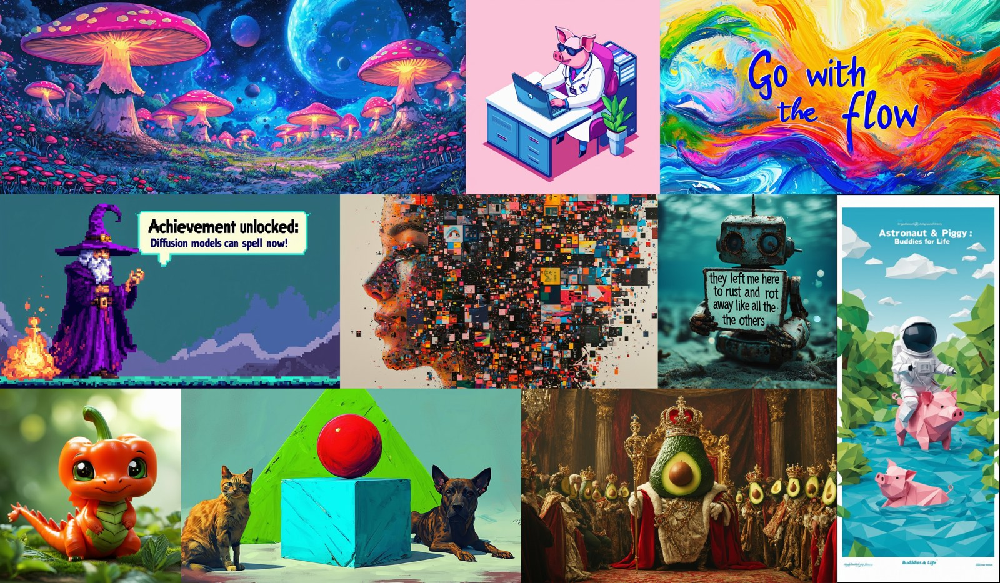
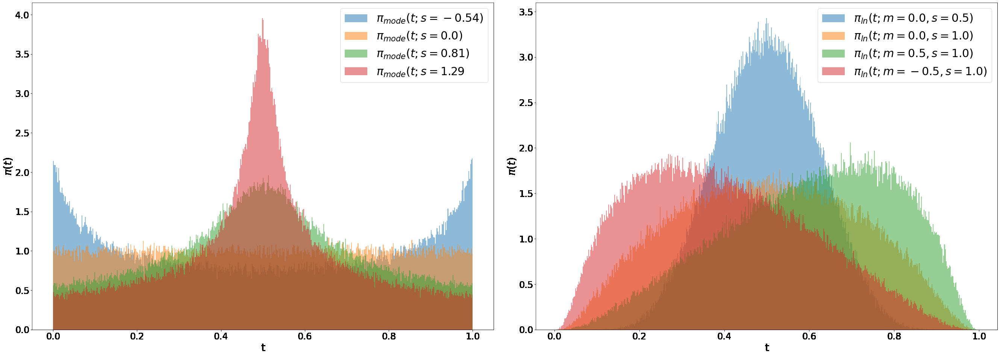
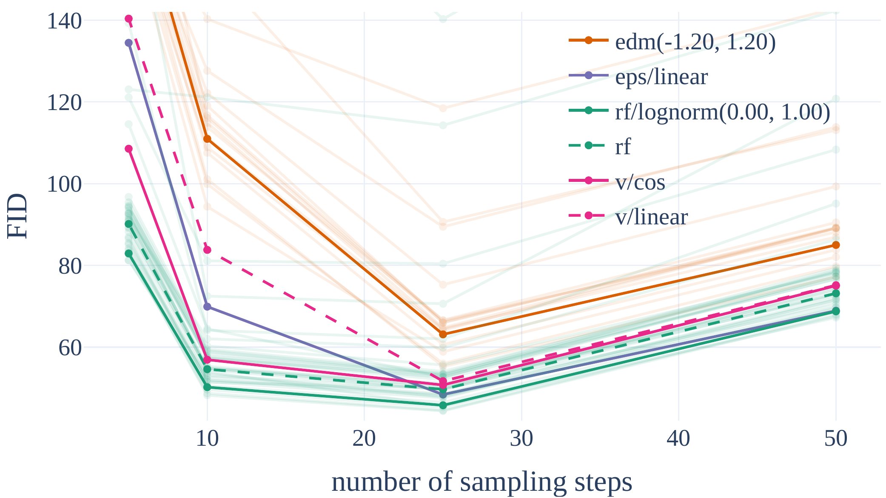
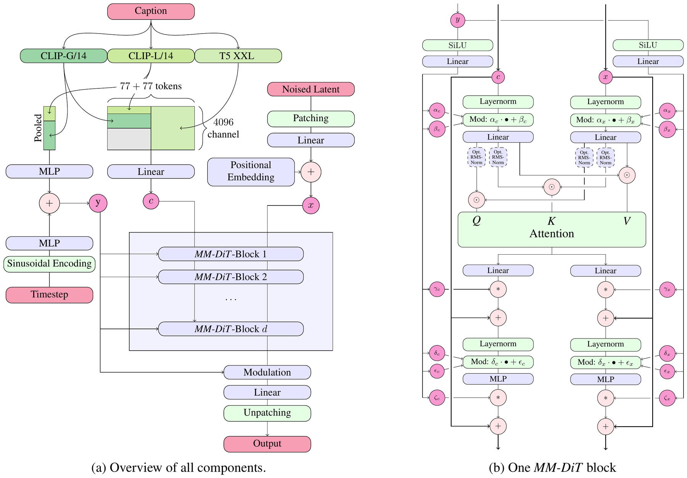
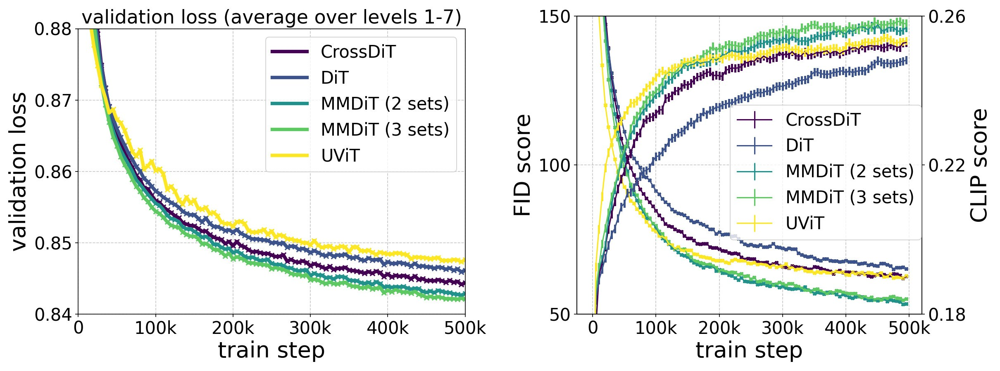
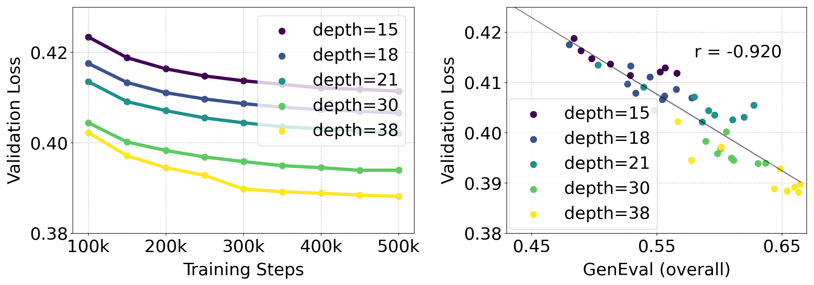
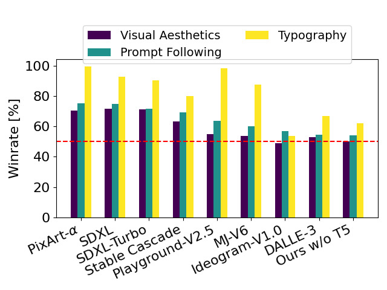

🎮 费曼一分钟（通俗速读）
SD 1.x/2.x 像沿着弯弯曲曲的河道把噪声「擦」成图——DDPM/VP 调度路径长，少步采样容易糊。Rectified Flow（整流流）则走直线：$z_t=(1-t)x_0+t\epsilon$，数据与噪声之间一根绳，理论上一步就能走完（实际仍需多步积分，但比弯曲扩散更省步）。本文（SD3）的第一招是：在大规模文生图里证明「直线流 + 聪明的时间步采样」能打赢传统 LDM-linear / EDM 扩散配方。
第二招是MM-DiT 架构：不再像 SD1 那样用 cross-attention「文本旁路注入」，而是把图像 token 与文本 token 拼成一条序列做联合注意力，但图像流与文本流各用独立权重（两套 Transformer，只在 attention 时见面）——文本能反向影响图像，图像上下文也能回馈文本理解，排版、复杂 prompt 遵循明显变好。
工程上仍站在 LDM 肩膀上：16 通道 latent VAE、冻结 CLIP+T5+CLIP-G 文本编码器、CogVLM 合成 caption 50/50 混训、SSCD 去重。最大 8B 模型验证损失与 GenEval / 人类偏好强相关，整体优于 SDXL、PixArt-α，并与 DALL·E 3 等闭源模型可比。
🗺️ SD3 技术栈一图流（自绘）
flowchart TB
subgraph DATA["数据与表示"]
IMG["图像"] --> AE["16-ch VAE 编码"]
TXT["Prompt"] --> ENC["CLIP-L/G + T5-XXL
冻结文本编码"]
CAP["50% CogVLM 合成 caption"]
end
subgraph FLOW["整流流训练"]
Z["z_t = (1-t)z_0 + t·ε
直线路径"] --> VEL["MM-DiT 预测速度 v_θ"]
SAM["Logit-Normal 时间步采样
rf/lognorm(0,1)"] -.偏重中间 t.-> Z
end
subgraph ARCH["MM-DiT"]
XS["图像 token 流
独立权重"] <-->|"联合 Attention"| CS["文本 token 流
独立权重"]
QK["QK-Norm 稳定 bf16"]
end
AE --> Z
ENC --> ARCH
VEL --> DEC["VAE 解码 → 图像"]
ARCH --> VEL
📄 原文 Figure 1：8B 模型样张（排版 / 细节 / 风格多样性）

Abstract
Diffusion models create data from noise by inverting forward paths; rectified flow connects data and noise on a straight line with better theoretical properties, but is not yet standard practice. We improve noise sampling for training rectified flow models by biasing toward perceptually relevant scales, and demonstrate superior performance vs established diffusion formulations for high-resolution text-to-image synthesis through a large-scale study.
We present a novel transformer architecture with separate weights for image and text modalities and bidirectional information flow between tokens, improving text comprehension, typography, and human preference. Our largest models outperform state-of-the-art and follow predictable scaling trends where lower validation loss correlates with improved synthesis.
扩散模型通过逆转「数据→噪声」的前向路径来从噪声生成数据；整流流在数据与噪声之间走直线，理论性质更好，但尚未成为标准实践。我们改进训练整流流时的噪声/时间步采样，使其偏向感知相关的尺度，并通过大规模研究证明其在高分辨率文生图上优于既有扩散配方。
我们提出一种新的 Transformer 架构：图像与文本模态使用独立权重，token 之间双向交换信息，提升文本理解、排版与人类偏好。最大规模模型超越当时最优，且呈现可预测的缩放规律——验证损失越低，生成质量越好。
主张 A（训练配方）：RF + 感知相关时间步采样 > 经典扩散。
主张 B（架构）：MM-DiT 双向联合注意力 > 单向 cross-attn。
摘要把「算法」与「架构」并列，后文 §5.1 / §5.2 分别大规模验证。
1. Introduction
While forward paths from data to noise enable efficient training, curved paths need many integration steps; straight rectified flows could be simulated with fewer steps. Rectified flow has not become decisively established in practice beyond medium-scale class-conditional experiments.
We introduce re-weighting of noise scales in RF models (analogous to noise-predictive diffusion) and compare formulations at scale. We also argue that feeding a fixed text representation via cross-attention alone is suboptimal, and propose learnable streams with two-way mixing between image and text tokens.
「数据→噪声」的前向路径虽便于训练，但弯曲路径需要很多次积分步；直线整流流理论上可用更少步数模拟。整流流在实践上尚未超越中等规模类别条件实验的范畴。
我们引入 RF 模型的噪声尺度重加权（类比噪声预测扩散），并在规模上对比多种配方。我们还认为仅靠 cross-attention 注入固定文本表示并不理想，提出可学习的双流并在图像与文本 token 间双向混合。
把 SD 系列的演进定位为：LDM（latent）+ DiT（Transformer）之后，下一步是 更短的生成路径（RF） + 更深的文本-图像耦合（MM-DiT）。
2–3. Simulation-Free Flows & Tailored Samplers
Unified framework: forward process $z_t=a_t x_0+b_t\epsilon$ with signal-to-noise ratio $\lambda_t=\log\frac{a_t^2}{b_t^2}$. Training regresses noise $\epsilon_\Theta$ with time-dependent weight $w_t$ (Eq. unified loss).
Rectified Flow: $z_t=(1-t)x_0+t\epsilon$, weight $w_t^{RF}=\frac{t}{1-t}$, network predicts velocity $v_\Theta$ directly.
Compared to EDM / cosine / LDM-linear schedules in the same framework (§3).
统一框架：前向 $z_t=a_t x_0+b_t\epsilon$，信噪比 $\lambda_t=\log\frac{a_t^2}{b_t^2}$，用带权重的噪声回归损失训练（式中 $w_t$ 统一多种扩散/流配方）。
整流流：$z_t=(1-t)x_0+t\epsilon$，权重 $w_t^{RF}=\frac{t}{1-t}$，网络直接预测速度 $v_\Theta$。
同框架下还与 EDM、cosine、LDM-linear（即 SD1 用的 VP 调度）等对比。
均匀 $t\sim\mathcal{U}(0,1)$ 对 RF 不优：中间 $t$ 的 velocity 目标 $\epsilon-x_0$ 更难学。改采样密度 $\pi(t)$ 等价于加权损失 $w_t^\pi=\frac{t}{1-t}\pi(t)$。
Logit-Normal：$\pi_{ln}(t;m,s)$，$m$ 控制偏向数据或噪声端，$s$ 控制宽度。Mode：端点密度非零。CosMap：与 cosine 调度对齐的 RF 版本。
61 种配方 × 2 数据集的大规模网格搜索 → 最优 rf/lognorm(0.00, 1.00)。
📄 原文 Figure 11 / §3.1：Mode 与 Logit-Normal 时间步分布

📄 原文 Figure 3：少步采样时 RF 更抗退化

Table 1 (global rank): rf/lognorm(0.00, 1.00) ranks best averaged over EMA/non-EMA, datasets, and sampler settings. Only modified RF samplers beat LDM-linear (eps/linear).
表 1 全局排名：rf/lognorm(0.00, 1.00) 在 EMA、数据集与多种采样设置平均后排名第一；只有改过时间步采样的 RF 能稳定胜过 LDM-linear（eps/linear，即 SD1 路线）。
| 排名 | variant | 备注 |
|---|---|---|
| 1 | rf/lognorm(0,1) | 5 步与 50 步均优 |
| ~3 | eps/linear | LDM/SD1 基线 |
| ~6 | rf (uniform) | 未改采样则一般 |
4. Text-to-Image Architecture (MM-DiT)
Follows LDM latent training with frozen text encoders (CLIP-L, CLIP-G, T5-XXL). Builds on DiT modulation for timestep $t$ and pooled text $c_{vec}$, but also needs sequence context $c_{ctxt}$.
MM-DiT: patchify latent $x$; concatenate text and image token sequences; apply modulated attention + MLP blocks with separate weights per modality — equivalent to two transformers that jointly attend over concatenated sequences.
Scaling: depth $d$, hidden $64d$, heads $d$. Optional third stream for separate CLIP/T5 weights (small gain, not used at scale).
沿用 LDM：在预训练 VAE latent 上训练，文本用冻结的 CLIP-L、CLIP-G、T5-XXL。基于 DiT 的 timestep 与 pooled 文本调制，同时需要序列级文本 $c_{ctxt}$。
MM-DiT：把 latent 切成 patch token，与文本 token 拼接；每模态独立权重做调制注意力 + MLP——等价于两个 Transformer 仅在 attention 时对拼接序列做联合注意力。
缩放规则：深度 $d$，隐藏维 $64d$，头数 $d$。可为 CLIP/T5 设第三套权重（收益小，大规模未采用）。
📄 原文 Figure 2：MM-DiT 模型结构（核心架构）

Figure 2. Our model architecture. Concatenation is indicated by $\odot$ and element-wise multiplication by $*$. The RMS-Norm for $Q$ and $K$ can be added to stabilize training runs.
(a) Overview of all components. (b) One MM-DiT block: two modality streams with separate weights, joined only at the attention operation so each representation works in its own space yet attends to the other.
图 2. 模型架构。$\odot$ 表示拼接，$*$ 表示逐元素乘。$Q$、$K$ 上的 RMS-Norm 可选，用于稳定训练。
(a) 全部组件总览；(b) 单个 MM-DiT block：两条模态流各用独立权重，仅在 attention 处合并——每条流在自己的空间运算，同时「看到」另一条流。
① 文本条件的双重注入
SD3 用三个冻结文本编码器：CLIP-L/14 与 CLIP-G/14 的 pooled 输出拼成全局向量 $y$，走调制路径（与 timestep 相加 → AdaLN 式 scale/shift）；而 CLIP 与 T5-XXL 的 序列 特征 $c_{ctxt}$（77+77 token）走token 路径，进入联合 attention。粗粒度语义调制 + 细粒度序列交互，分工明确。
② 双流独立权重 vs 单流 DiT
图 (b) 左右对称却不共享权重：文本流、图像流各有自己的 LayerNorm、Linear、MLP。这等价于「两个 Transformer 在 attention 时握手」。对比 DiT（单流共享）与 CrossDiT（文本仅作 K/V 单向注入），MM-DiT 让图像可反向影响文本表示，提升排版与复杂 prompt 遵循（见上方自绘对比图与 Fig.4 曲线）。
③ QK-Norm 的位置
图中 $Q/K$ 进入 Attention 前的虚线 Opt. RMS-Norm 是关键工程细节：高分辨率微调时注意力 logit 爆炸导致熵坍塌、loss 发散；在两条流的 $Q,K$ 上加 RMSNorm 即可在 bf16-mixed 下稳定训练（§5.3.2）。
逻辑角色
本图是「主张 B（架构）」的落地蓝图：摘要里抽象的「双向信息流 + 独立权重」在此具体化为可实现的 block 结构，后续 Fig.4 用训练曲线证明其优越性。
📄 原文 Figure 4：MM-DiT vs DiT / CrossDiT / UViT 训练曲线

5. Experiments at Scale
§5.2 Improvements: (i) 16-ch VAE (FID 1.06 vs 4ch 2.41). (ii) 50% CogVLM synthetic captions → GenEval 49.78% vs 43.27%. (iii) MM-DiT backbone ablation (Fig.4).
§5.3 Scale: SSCD dedup, precomputed latents/embeddings, QK-Norm for stable bf16, resolution-dependent timestep shifting, bucketed multi-aspect training up to 8B params.
Validation loss correlates with GenEval, human Elo, T2I-CompBench (Fig. scaling).
§5.2 组件改进：（i）16 通道 VAE 重建更好。（ii）50% CogVLM 合成 caption 显著提升 GenEval。（iii）MM-DiT 骨干消融（Fig.4）。
§5.3 规模化：SSCD 去重、预计算 latent/文本嵌入、QK-Norm 稳定 bf16、分辨率相关 timestep shifting、分桶多宽高比训练，最大 8B 参数。
验证损失与 GenEval、人类 Elo、T2I-CompBench 强相关（缩放图）。
SD3 = RF 配方 + MM-DiT + 数据管线升级的组合拳，而非单一 trick。与 SD1 相比：路径（RF）、骨干（MM-DiT）、VAE（16ch）、caption（合成）、规模（8B）五处同时动刀。
📄 原文 Figure 7 / scaling：验证损失 ↔ 下游指标

📄 原文：人类偏好 vs SOTA 模型

Conclusion
We establish rectified flow with tailored timestep sampling as a strong alternative to diffusion for large-scale T2I, and show MM-DiT scales predictably to 8B with improved text rendering and human preference. Code and weights released.
我们证明「带定制时间步采样的整流流」可替代大规模文生图中的扩散训练；MM-DiT 可预测地扩展到 8B，并改善文本渲染与人类偏好。代码与权重公开。
RF 少步采样仍依赖求解器质量；多模态安全过滤与 memorization 仅部分讨论；视频扩展在附录提及但未展开。
📐 符号与配方速查
| 符号 / 名称 | 含义 |
|---|---|
| $z_t$ | latent 空间带噪样本 |
| RF | $z_t=(1-t)z_0+t\epsilon$，直线整流流 |
| $\pi_{ln}(t;m,s)$ | Logit-Normal 训练时间步密度 |
| rf/lognorm(0,1) | SD3 选用的最优 RF 配方 |
| MM-DiT | 多模态双流 DiT，联合 attention |
| $d$ | Transformer 深度；hidden=$64d$，heads=$d$ |
| QK-Norm | 注意力前 RMSNorm Q/K，稳定大模型 bf16 |
🦴 论证骨架
↓
统一流/扩散框架（§2）→ RF 直线路径 + 时间步采样改进（§3.1）
↓
61 配方大规模对比 → rf/lognorm(0,1) 胜出（表1、Fig.3）
↓
MM-DiT 双向联合注意力（§4）+ 16ch VAE + 合成 caption（§5.2）
↓
扩展至 8B：验证损失可预测，人类偏好 / GenEval SOTA（§5.3）
❓ 十问十答
Q1 · SD3 和 SD1 最大区别是什么？
Q2 · Rectified Flow 和 Flow Matching 什么关系？
Q3 · 为什么 rf/lognorm(0,1) 最好？
Q4 · MM-DiT 和 SD3 论文里的 MMDiT 一样吗？
Q5 · T5 可以去掉吗？
Q6 · 验证损失能当 early stopping 吗？
Q7 · 代码在哪？
Q8 · 少步采样可行吗？
Q9 · 主要贡献是什么？
Q10 · 下一步工作？
🔬 深挖追问
与 SDXL / FLUX 谱系
SDXL 仍走扩散 + U-Net/DiT 混合；SD3 彻底押注 RF + MM-DiT。FLUX 后来也采用 flow matching + 类似多模态 Transformer——可对照两者 timestep shifting 与 VAE 选择。
批判性盲区
- 61 配方搜索计算量巨大，中小团队难以复现「最优」采样超参。
- 同时改 RF、架构、VAE、caption、数据去重，因果归因依赖消融而非单因子。
- 人类评估与 GenEval 仍无法覆盖全部失败模式（手、计数、物理）。
- RF 直线假设在极高维 latent 是否总优于 EDM 曲线路径，理论仍开放。